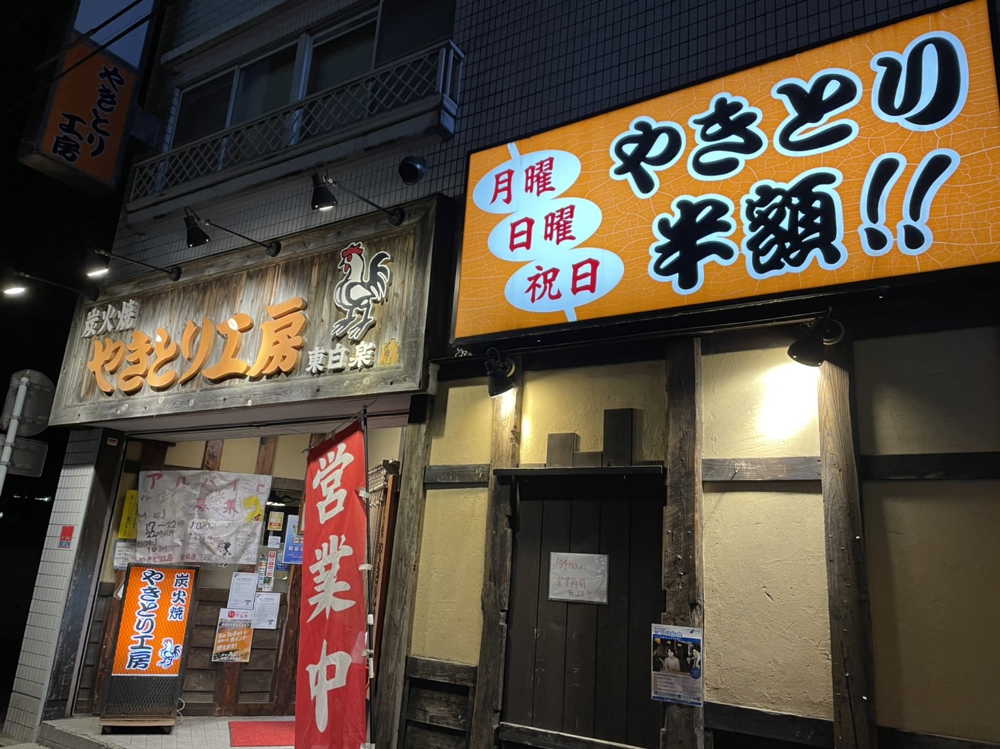
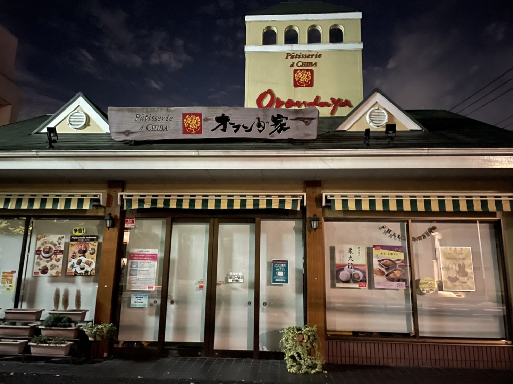

身近な看板
やきとり工房/2021.10.10 撮影者：中野

(有)にアーズが運営する横浜を中心に神奈川県に展開しているチェーン店。
やきとり工房のイメージキャラクター的な鶏も看板に。
東白楽の駅前にある居酒屋さんで、緊急事態宣言が発令されていないときは、かなりにぎわっている人気店だ。
月曜日、日曜日、祝日が半額なのも、サラリーマンたちにとっては大きいことだろう。
セントラル楽器/2021.10.11 撮影者：中野
東白楽駅の近くにあるセントラル楽器。
看板のデザインが楽器になっていたり、上にト音記号がついていたりと、非常にかわいらしいおしゃれな看板だと思った。
外から見えるショーケースに飾ってあるシャイニーケースもかわいいものが多く、吹奏楽部の私としては幸せな空間だ。
オランダ家/2021.10.11 撮影者：中野

オランダというからてっきり洋菓子や送風家具のお店かと思いきや、お店の窓を見ると和菓子のチラシが…？！
よく見ると、外観はオランダ風な気がするが、看板の雰囲気は少し和風な気がしないでもない。
実際は和菓子も洋菓子も扱う千葉県松戸市にあるお店だった。